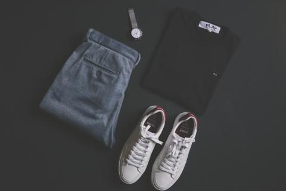
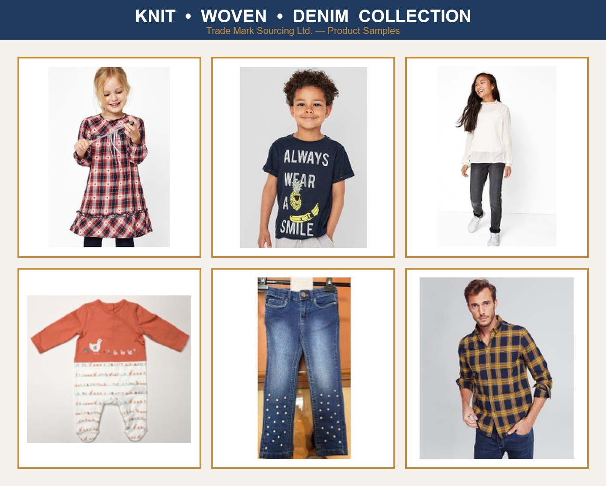
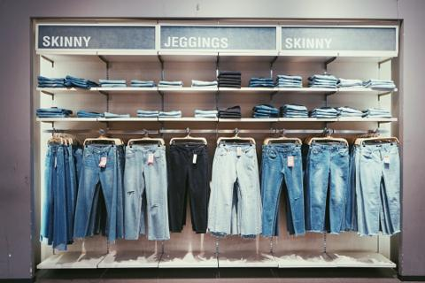

Knitwear
T-Shirts, Polos, Tanks, Hoodies
Dhaka, Bangladesh · Serving Global Markets
A results-driven garment buying and sourcing company delivering end-to-end apparel sourcing for global brands, retailers, and importers.
Company Overview
Trade Mark Sourcing Ltd. is a results-driven garment buying and sourcing company headquartered in Dhaka, Bangladesh — one of the world's most competitive and compliant apparel hubs.
We deliver end-to-end sourcing for global brands, retailers, and importers, with a strong focus on the European market. Our commitment is simple: long-term, transparent, and mutually beneficial partnerships built on trust, quality, and on-time delivery.
Why Choose Us
Optimized sourcing and price engineering to deliver strong commercial value.
Fully compliant, audited factories aligned to global buyer protocols.
Strong product development and trend alignment for every collection.
Transparent, real-time communication throughout the production cycle.
Strict adherence to delivery timelines and critical path management.
Ethical and sustainable sourcing embedded in every partnership.
Our Capabilities & Operational Strengths
With deep expertise in the Bangladesh RMG sector, we handle both small and bulk production with efficient supply chain coordination and dedicated QC and merchandising teams.

Product Portfolio

T-Shirts, Polos, Tanks, Hoodies

Shirts, Trousers, Denim, Jackets
Pullovers, Cardigans, All Gauges
Activewear, Performance, Technical
Uniforms, Safety & Functional
Underwear, Sleepwear, Intimates
Core Services
Lab support for product development, mood boards, and new product presentation.
Comprehensive fabric and trim sourcing tuned to your quality and cost targets.
Selecting the right vendors and engineering prices for the best commercial value.
Smooth production and critical path management for reliable, on-time output.
Inline and final inspection, fast transportation, and on-time shipment.
A complete, single-partner journey from raw material to finished, packed goods.
Quality & Compliance
Multi-stage quality control with internationally compliant factories, aligned to global buyer protocols. We combine dedicated quality teams with third-party verification standards to deliver consistent, buyer-ready results.
Our deep insight into regional compliance, quality expectations, and commercial dynamics — especially across the European retail landscape — makes us a dependable partner for demanding programs.
Key Clients
Get in Touch
We build long-term, transparent, and mutually beneficial partnerships based on trust, quality, and on-time delivery.
Contact Us